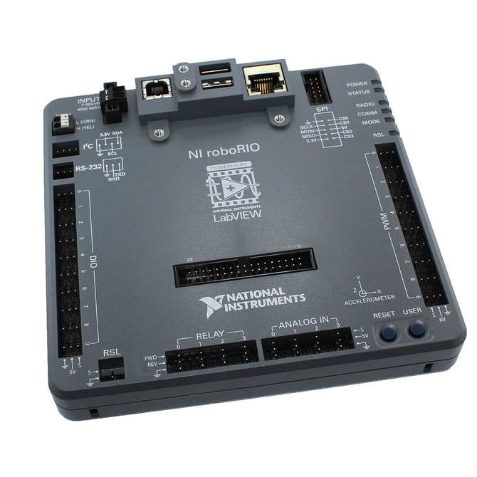

RI7D: An Engineering Journey – Insights, Rants, and Revelations
Project Overview
RI7D is a self-imposed challenge, inspired by the Ri3D event created by iR3 Creative Engineering, is an intensive robotics competition where a group of aspiring engineers and FIRST Robotics alumni design, build, and decorate a functional, mostly FRC-legal robot in just 7 days — far less than the 6 weeks given to high school teams in the FIRST Robotics Competition (FRC). The focus is on teaching people how to build a robot and understand each component within 7 days.
Key Features:
- Mentorship-Driven: Beginner students are guided by experienced upper-year mentors and FRC alumni across three subteams: Mechanical, Control Systems, and CAD.
- Team Structure:
- 10 experienced FRC Mentors: 3 Mechanical, 3 CAD, and 4 Control Systems experts.
- 5 Newbies: Selected through applications and interviews.
- Purpose: To foster engineering passion, develop essential skills, and contribute to the global STEM community through hands-on robotics experience.
This fast-paced challenge not only tests technical skills but also encourages teamwork, creativity, and problem-solving under tight deadlines. For a detailed list of parts and materials used in the construction of the robot, check out the Inventory section.
Robot in 7 Days (Ri7D) 2025 Timeline
This was the planned timeline before the event started.
Jan 4th - Kickoff @ ACE Climatic Wind Tunnel
Summary: The event kicks off at the ACE Climatic Wind Tunnel in Oshawa. Teams will watch the game animation, review the rulebook, brainstorm strategies, identify subsystems, and plan the timeline. Mentees must understand all subteams and choose their focus for the next three days. At this point, a general point-scoring design for the robot should be decided, and the CAD model should start to be developed.
Jan 6th - Work @ The Dungeon
Summary: Teams will work at The Dungeon (an engineering design space). Activities include prototyping subsystems, building the drivetrain and electrical board, programming the drivetrain, and CADing the robot. The CAD model should be completed by the end of the day, and the electrical board should be started. Any issues with the design should be ironed out, and the point-scoring system should be prototyped with wood.
Jan 7th - Work @ The Dungeon
Summary: CAD and Control Systems teams will focus on finishing subsystem designs and implementing them, while the Mechanical team will continue building. The electrical board will be completed, and programming for subsystems will begin. Mentees should have decided which subteam they wish to focus on and learn more about.
Jan 8th - Work @ The Dungeon
Summary: Subsystems will be attached to the drivetrain, and the electrical board will be tested with each separate subsystem. Programming will be tested, and any issues will be addressed and prototyped. The robot should be able to drive by the end of the day.
Jan 9th - Work @ The Dungeon
Summary: Teams will focus on debugging, fixing, and rewiring. Cable management will be prioritized, and subsystems will be fine-tuned for optimal performance.
Jan 10th - Work @ The Dungeon
Summary: Teams will continue debugging and fixing issues. Final adjustments will be made to the robot, and the electrical system will be finalized. The robot will be prepared for filming and content creation.
Jan 11th - Work @ The Dungeon
Summary: The final day will focus on filming the robot, editing the video, and creating content. Any last-minute fixes will be completed, and the robot will be finalized for submission.
Inventory
All of the components listed below were generously borrowed from various teams in and around the Toronto area. Their contributions have been invaluable in helping us achieve our goals and bring our vision to life.
-
2xBATTERY
The 12V 18Ah sealed lead-acid battery powers the entire FRC robot, providing the necessary current for all components.
-
 1x
CIRCUIT BREAKER
1x
CIRCUIT BREAKERThe 120A main circuit breaker acts as both the main power switch and a protection device against excessive current draw.
-
 1x
PDP
1x
PDPDistributes 12V power from the battery to various robot components, including auto-resetting circuit breakers.
-
 1x
RADIO
1x
RADIOEnables wireless communication between the robot and the Driver Station, operating as an access point or field bridge
-
 1xROBORIO
The main robot controller, handling sensor inputs, motor outputs, and communications via CAN, Ethernet, and USB
-
 8x
SNAP ACTION BREAKER
8x
SNAP ACTION BREAKERProvides overcurrent protection for individual circuits in the PDP, preventing damage to components.
-
 4x
VICTOR SPX MOTOR CONTROLLER
4x
VICTOR SPX MOTOR CONTROLLERA compact and efficient speed controller that manages brushed DC motors using PWM or CAN control
-
1xVRM
Provides stable 12V and 5V power outputs for the robot radio, vision cameras, and other electronics.
RI7D: Insights, Rants, and Revelations
Written by Mina, the Control Systems Lead for the project, this article
focuses primarily on the electronics and software side of the robot. While the mechanical and
CAD teams made incredible progress, I didn’t personally work on those aspects, so I can’t
comment on them in detail. From debugging outdated hardware to wrestling with faulty components,
this is the story of how we made it work—against all odds.
The journey was far from smooth—delays, outdated hardware, and faulty parts made it a constant
uphill battle. Despite everything going wrong, we still managed to achieve our goal: teaching
people about FRC Robotics and how to build a robot in 7 days.
As an inside joke from our team, we considered rebranding this as RO0D (Robot On 0 Dollars)
since that seemed more impressive than our final product.
Chapter I: Optimism
The journey began with a wave of excitement and optimism. This chapter captures the initial enthusiasm and ambitious plans as the team embarked on the project, full of hope and determination.
Day 1: Kickoff and Planning
On Day 1, we kicked off the event at the ACE Climatic Wind Tunnel in Oshawa, where we met
with other Toronto-area teams, shared ideas, and brainstormed strategies. The energy was
electric as we discussed the game animation, reviewed the rulebook, and identified the
subsystems we’d need to build. Mentees were introduced to the project, and everyone left the
kickoff feeling motivated and ready to tackle the challenge.
At this point, we didn’t think much about what we had—or didn’t have. The only things in our
possession were a drivetrain and literally nothing else. No inventory, no spare parts, no
tools beyond the basics. But we were too caught up in the excitement to worry. After hours
of brainstorming and planning as a team, we went home with a solid plan to start prototyping
our ideas the next day. Little did we know, things wouldn’t go as smoothly as we hoped.
The team at the ACE Climatic Wind Tunnel during the kickoff, meeting with other Toronto-area teams and brainstorming ideas.
Chapter II: Cracks in the Plan
Content for Chapter II goes here. Here, we explore the first signs of trouble—unexpected challenges, logistical hurdles, and the moments when the team realized the road ahead would be tougher than anticipated.
Day 2: Design Struggles and Borrowed Parts
On Day 2, we didnt have access to our workspace, so we began trying to pick a point-scoring
scheme to
focus on. After much deliberation, we decided to focus on creating a mechanism that could
score coral and process algae. (If you’re not familiar with FRC, here’s a link to the 2025 Game Manual for reference.)
For those who don’t know what coral and algae are, here’s a quick explanation:
The coral is the white tube, and the algae is the green ball.
We finally settled on what we thought would be our final design and began identifying
potential issues before prototyping it with wood. Meanwhile, I compiled a list of
electronics we needed to borrow from other teams, and team members went out to gather the
necessary components. In a moment of overconfidence (or sheer optimism), I started working
on the code without even considering the hardware we had—or didn’t have. (I now know, that
it wasn't the best idea)
By the end of the day, we weren’t entirely satisfied with our design so we had to scrap it,
but we managed to
secure a RoboRIO, radio, and PDP from another team, which we would receive the next morning
(Day 3).
Chapter III: Despair
By the beginning of Day 3, the reality of our tight deadline started to sink in. With only four days left and not much progress to show for the first two days, the team began to feel the weight of the situation. The pressure was mounting, and the stress was palpable.
Day 3: The Battery Crisis
We started the day by assembling what little we had from our inventory: a RoboRIO, a radio,
and four motor controllers. That’s when we realized something glaringly obvious—we didn’t
have a battery. Without a battery, we couldn’t test any of the electronics, and we couldn’t
test any of the code. It was a major roadblock that brought everything to a
standstill.
With nothing to do on the control systems side, most of the control systems team pitched in
to help with mechanical and CAD work wherever they could. It was a frustrating and
demoralizing day, but we had no choice but to keep pushing forward.
Chapter IV: The Turning Point
Content for Chapter IV goes here. A pivotal moment in the story, where the team rallied together, found innovative solutions, and began to turn the tide in their favor.
Day 4 and 5: Locking In and Problem-Solving
By Day 4, we were fully locked in. We borrowed a battery and a VRM (Voltage Regulation Module), only to realize we didn’t have the right cable to power the VRM. So, one of us went out and bought the cable (that was only avaliable from a store 4 hours away). Then, we discovered we didn’t have the lugs for the 6 AWG wire needed to connect the battery. So its my turn for a trip to the store, and we finally had what we needed. These days were a whirlwind—every problem that came up, we tackled head-on without slowing down.
The Great Lug Hunt
Let me tell you about the time I went on a mission to buy lugs. Picture this: Me and some people from the team are standing in the hardware store, staring at a wall of electrical components, trying to figure out which lugs are the right size for 6 AWG wire. After a few minutes of confusion (and maybe a little panic), we finally found what we needed. It wasn’t exactly a glamorous moment, but it was a small victory in the grand scheme of things. Little did I know, this was just the beginning of our troubleshooting adventures.
The lugs we finally found after a long search. This was one of the many hurdles we faced during the build.
With the battery and VRM in place, we could finally flash the radio and the RoboRIO,
allowing us to start testing and working on the software side of the robot. After flashing
the radio, we spent some time trying to push code, but nothing was working. The motor
controllers were flashing strange colors, and after wasting some time, I looked up the error
codes. Turns out, they were indicating a sticky fault.
What’s a sticky fault? It’s a persistent error in the motor controller that
doesn’t clear automatically and requires manual intervention to reset. According to the PDF
spec sheet for the motor controller, I needed to connect to the RoboRIO or PDP (Power
Distribution Panel) to clear the faults manually. The PDP, however, was made in 2015 and
didn’t have a USB-C port or anything modern—so I had to plug into the RoboRIO
instead.
But when I opened Phoenix Tuner (a software tool used to configure and diagnose CAN devices
on FRC robots), nothing showed up. This meant there was likely an issue
with the CAN wiring. At this point, literally anything could be wrong—this was the first
time I was dealing with this hardware, and after double- and triple-checking everything, we
still couldn’t clear the sticky faults or test if any of the components worked. It was a
frustrating setback, and we started to dread what Day 6 might bring.
The PDP with a red light indicating a communication or power fault. This was one of the many hurdles we faced during the build.
Chapter V: Recovery
This chapter captures the team’s efforts to recover from setbacks, make progress, and regain momentum as the deadline loomed closer.
Day 6: A Fresh Start and New Challenges
Deciding to start Day 6 with a fresh mind, I arrived at the workspace early and decided to
tackle the CAN wiring issue head-on. I re-did all the CAN wires, plugged my laptop into the
RoboRIO, and opened Phoenix Tuner. To my surprise—and slight frustration—it just worked. On
the first try. I tried to balance my anger at how simple the solution was with the relief of
finally making progress.
At this point, the only way to make the robot move was to manually set the output percent of
a motor controller using a slider in Phoenix Tuner. But just seeing the robot’s wheels spin
was enough to give the entire team a much-needed boost of motivation. It was a small
victory, but it reminded us that we were capable of overcoming the challenges in front of
us.
With the CAN communication issue resolved, I could now access the firmware for the PDP and
motor controllers. After more scavenging on the internet, I managed to flash newer firmware
onto the devices. But just as one problem was solved, another emerged. When I was writing
the code for the robot, I had used WPILib 2024, thinking there wouldn’t be much of a
difference—and, admittedly, out of laziness. However, I had flashed the RoboRIO with 2025
firmware. Naturally, pushing 2024 code to a 2025 RoboRIO didn’t work at all (which, to be
fair, makes sense). So, it was time to install WPILib 2025 and rewrite the code.
By the end of the day, the code and firmware for the RoboRIO were aligned, the motor
controllers and PDP had no faults, and all the electrical components that needed a team
number were properly configured. I tested and confirmed that all the motor controllers were
working. It felt like we were finally making real progress.
As I left the workspace that evening, I thought everything would finally work together the
next morning—the morning of the 7th and final day. Little did I know, the issues never stop.
The robot’s wheels spinning for the first time, controlled manually using Phoenix Tuner. A small but significant victory for the team.
Chapter VI: At the Last Moment
At the start of day 7, all I had to do was push code and set up the controls for my specific
controller. It seemed easy enough, but after spending 30 minutes trying to upload code to the
roboRIO, I was getting nowhere. I decided to reflash the radio, but still, nothing—no
confirmation message, no error message, nothing in the console. Hmm.
I rechecked all the motor controllers, and they worked fine when I manually gave them a percent
output. To avoid wasting more time, I immediately went back to the Victor SPX documentation.
That's when I realized there were about four different types of Victor SPX classes in WPILib. I
thought it might be a code issue. I used the exact code from the documentation for this specific
model of motor controller, and it still didn't work. Great!
I reflashed the radio again and eventually replaced it with another one we borrowed from a
different team. After reflashing the radio and setting its team number, I tested the controller,
and... WE WERE DRIVING, BABY! LET'S GOOOOOOOOOO! From there, I worked on setting up the
controller to drive properly with the robot and optimized it so it drove cleaner.
At this point, the mechanical and CAD teams had faced their own challenges and struggles
throughout the 7 days, and everyone was just glad we had a moving, functioning robot. I honestly
believe it was genuinely harder to combine a bunch of old, random components together than it
would have been to build a regular bot that could do the same thing from new components. We
built this robot on $0 (kind of!?). It was a real challenge, but at least we had a finished
product, and we learned some invaluable life and engineering skills and lessons.
I am incredibly proud of what we achieved in just 7 days. This experience has given me the
confidence that, with the lessons we've learned, we could build an even better robot in just
3 days next time. (Exciting, right? Next time, here we come!)
The robot pushing an algae up a ramp.
Our Robot and Team

TL;DR (Too Long; Didn't Read)
Spoiler alert: It was a mess. The design wasn’t finalized until day 5, the robot
had no power until day 4, and the electrical components were ancient—some even faulty. (Some
datasheets were so outdated, they didn’t even exist anymore. I spent hours just trying to figure out
how to use this hardware.)
We started with no inventory. Every part had to be borrowed, leading to constant delays. The robot
didn’t drive until the final hours of the event—and even then, we had to disassemble it
immediately to return the borrowed parts.
On day 7, I thought all I had to do was push code and set up the controller. Easy, right? Wrong.
After 30 minutes of failed attempts, I reflashed the radio—still nothing. No errors, no messages,
just silence. I double-checked the motor controllers—they worked manually, so the issue had to be in
the code.
Turns out, there were multiple versions of the motor controller class in the library. I used the
exact example from the docs for our model, and it still didn’t work. Fantastic. After reflashing the
radio again and borrowing a replacement, I finally got it working. WE WERE DRIVING! LET’S
GO!
Despite the chaos, we pulled it off. Combining old, random parts was harder than building from
scratch, but we did it on a $0 budget (kind of). We learned invaluable lessons and proved we could
do it even better next time—maybe in just 3 days.
Gallery
Explore the visual journey of our RI7D project through our gallery. Witness the engineering process, teamwork, and milestones captured in images.
Fun Facts
- I had the honor of naming our robot! My suggestion, "Tunip," won the most votes. The name was inspired by the adorable Octonauts character, fitting perfectly with this year's water-themed FRC game.
- Balancing this project with a full school workload was no small feat. Many team members even skipped classes to contribute their time and effort to make it happen.